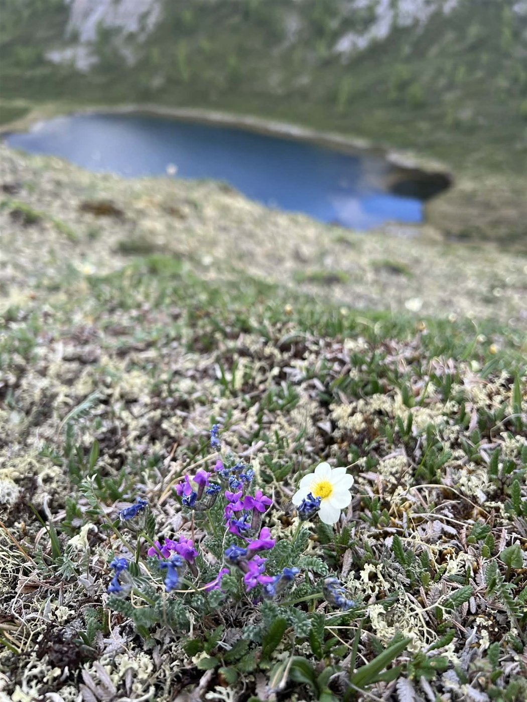
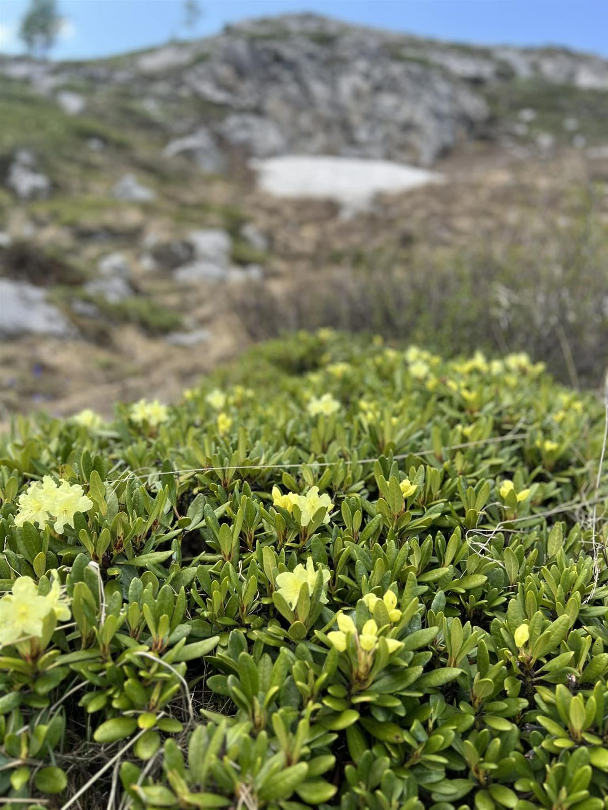
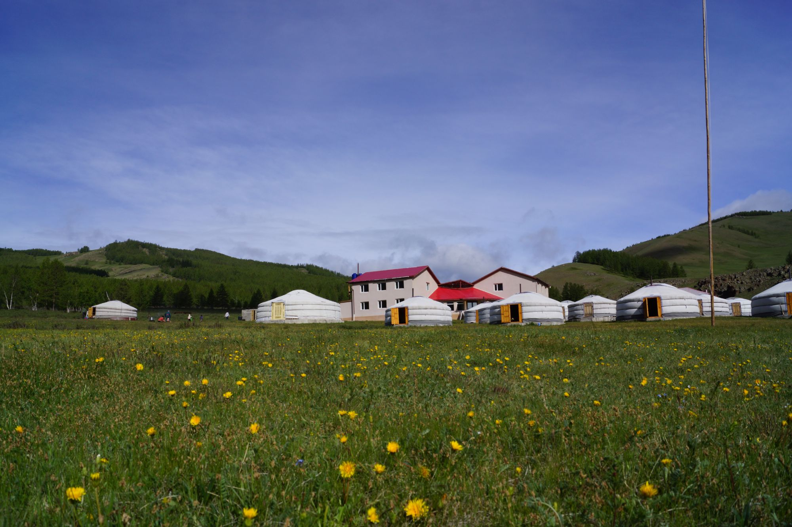
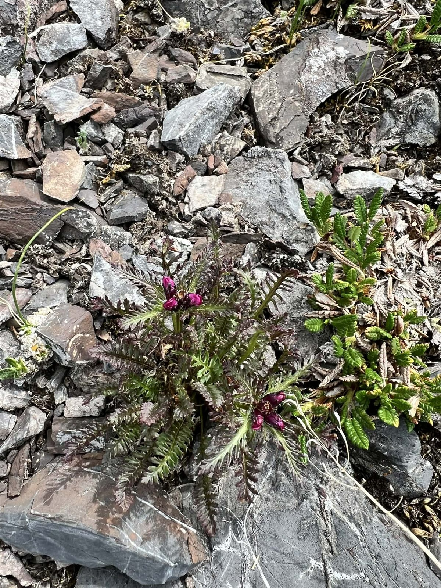

湖と高山植物
森と高原に囲まれたフブスグル湖畔で、季節の野花や岩場の高山植物を観察します。



湖と花畑の登山旅。フブスグル湖畔と高原の花々を歩き、展望地から青い湖と北部モンゴルの山並みを眺めます。
森と高原に囲まれたフブスグル湖畔で、季節の野花や岩場の高山植物を観察します。

地域で大切にされてきた山の登山道を歩き、天候が良ければ高所の展望地から湖を眺めます。
湖畔近くのゲルに泊まり、北部の澄んだ空気と満天の星空を楽しみます。
| 日程 | 行程 | 宿泊 |
|---|---|---|
| 1日目 | チンギス・ハーン国際空港にて日本語ガイドがお出迎え。専用車でウランバートル市内ホテルへお送りします。ご到着後は休息と翌日の国内線に備える時間です。 食事：✕／✕／✕空港送迎 | ウランバートル市内 ホテル泊 |
| 2日目 | 朝、国内線でウランバートルからムルンへ（約1時間）。到着後は専用車で市内へ移動し、北部の暮らしに触れながら旅の準備をします。翌日のフブスグル湖畔ハイキングに備え、ムルン市内ホテル泊。 国内線：約1時間食事：朝／昼／夕 | ムルン市内 ホテル泊 |
| 3日目 | 専用車でフブスグル湖畔へ。湖へ近づくにつれ、草原から森林と山並みへ変わる景観を楽しみます。到着後は湖畔の花畑を歩き、ヒャサ山のふもとのハイキングコースで高山植物を観察。ゲルにチェックイン後、湖に沈む夕日と星空を楽しみます。 ハイキング：約4km食事：朝／昼／夕 | フブスグル湖畔 ゲル泊 シャワー充電 |
| 4日目 | 終日、フブスグルの高地へ高山植物ハイキング。花畑、岩場、針葉樹の景色を眺めながら、ヒャサ山の展望地を目指します。体力と天候に合わせて行程を調整し、湖と北部の山並みを一望できる場所で休憩。夕方は湖畔のゲルへ戻り、星空を観察します。 ハイキング：約7km食事：朝／昼／夕 | フブスグル湖畔 ゲル泊 シャワー充電 |
| 5日目 | 朝、湖畔を散策してから専用車でムルンへ戻ります。ムルン空港から国内線でウランバートルへ。到着後は市内ホテルへ移動し、旅の最後の夜をゆっくりお過ごしください。 国内線：約1時間食事：朝／昼／夕 | ウランバートル市内 ホテル泊 |
| 6日目 | 朝食後、専用車でチンギス・ハーン国際空港へ。日本への帰国便に合わせてお送りします。 食事：朝／✕／✕空港送迎 | — |
※国内線の時刻、花の開花状況、ヒャサ山の歩行ルートは天候・現地事情・ご参加者の体力により変更となる場合があります。
| 4名ご参加：￥220,000/一人 | ※ 2名or3名でツアー開催追加料金：￥60,000/一人 ※ 1名開催追加料金：￥80,000（お一人貸切プライベート旅！） ※ 12歳以下のお子様料金：30％割引 |
|---|